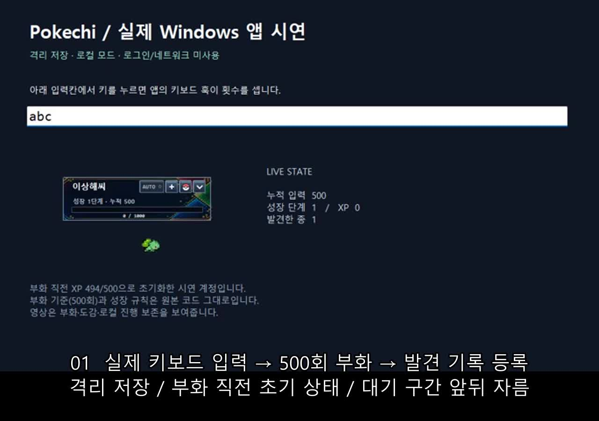

OpenMath — 참고할 수학 문항을 찾는 검색
3인 팀에서 수학 문제 생성에 쓸 참고 문항 검색을 맡았습니다. 학년·단원 조건으로 후보를 고르고, 정답 비교와 문항 선택 화면까지 연결했습니다.
검색 예시와 구현 보기 ↗OPENMATH / 팀 프로젝트
조건에 맞는 문항을 골라
문제 생성의 출발점을 정했습니다.
선택한 작업
3인 팀에서 수학 문제 생성에 쓸 참고 문항 검색을 맡았습니다. 학년·단원 조건으로 후보를 고르고, 정답 비교와 문항 선택 화면까지 연결했습니다.
검색 예시와 구현 보기 ↗조건에 맞는 문항을 골라
문제 생성의 출발점을 정했습니다.
기존 VS Code 확장의 아이디어와 자산으로 독립 앱을 만들었습니다. 입력에 따라 캐릭터가 자라고, 앱을 다시 열어도 기록이 이어집니다. 이후 계정별 동기화도 추가했습니다.
44초 실행 영상 보기
공시를 바탕으로 쓴 AI 보고서의 판단을 원문과 대조했습니다. 별도로, 주변 거래와 건물·시세 자료를 찾아 비교표로 정리하는 도구의 조회·출력 기능을 개발했습니다.
두 작업 자세히 보기 ↗보고서의 판단은 원문에서 확인하고,
조사 자료는 비교할 수 있게 정리했습니다.
이력과 기술
소프트웨어학부 소프트웨어학과
2021.03 입학 · 2027.02 졸업 예정공시 보고서의 근거 검증과 조사 자료 처리
수학 문항 검색과 정답 확인
Windows 앱의 로컬 저장과 계정 동기화
연락과 이력서
이력서에는 경력과 학력을, GitHub에는 공개할 수 있는 프로젝트 코드를 정리했습니다.